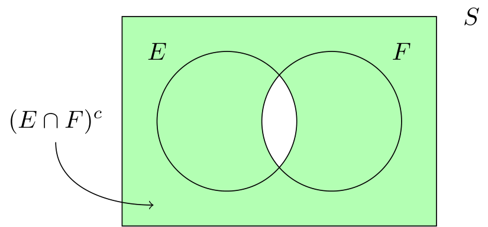

Definizione - Spazio campione
Lo spazio campione di un esperimento indica l'insieme di tutti gli esiti possibili per questo, ovvero \[ S = \{ e_1, \ldots, e_n \} \] Esso è indicato solitamente con \( S\) (oppure \( \Omega\)).
Definizione - Evento
Un evento è un sottoinsieme dello spazio campione.
Si indica con una lettera maiuscola (diversa solitamente da \( P\) e \( S\)).
Si indica con una lettera maiuscola (diversa solitamente da \( P\) e \( S\)).
Definizione - Unione di eventi
Considerando due eventi \( E, F \subset S\), l'unione dei due eventi si indica con \[ E \cup F \] e comprende gli esiti appartenenti ad almeno uno dei due eventi.
Definizione - Intersezione di eventi
Considerando due eventi \( E, F \subset S\), l'intersezione dei due eventi si indica con \[ E \cap F \] e comprende gli esiti appartenenti ad entrambi gli eventi.
Se \( E \cap F\) non contiene esiti, esso si indica con l'insieme vuoto (\( \varnothing\)) e i due eventi si dicono mutuamente esclusivi (o disgiunti).
Se \( E \cap F\) non contiene esiti, esso si indica con l'insieme vuoto (\( \varnothing\)) e i due eventi si dicono mutuamente esclusivi (o disgiunti).
Definizione - Evento complementare
Considerando un evento \( E \subset S\), l'evento complementare \( E^c\) è uguale a \[ E^c = S \setminus E \] e comprende gli esiti dello spazio campione \( S\) che non appartengono a \( E\).
Definizione - Definizione classica di probabilità
Considerando uno spazio campione \( S\) ed un evento \( E \subset S\), si associa all'evento \( E\) un numero reale detto probabilità (indicato con \( P(E)\)) uguale a \[ P(E) = \frac{n^\circ \ \text{esiti in} \ E}{n^\circ \ \text{esiti in} \ S} \] Tale definizione è valida tuttavia solo se \( S\) è un insieme finito e se gli esiti sono equiprobabili.
Nota bene - Matematicamente sbagliato
Tale definizione risulta essere matematicamente sbagliata, in quanto per definire la probabilità si utilizza la definizione stessa di probabilità (per il termine "equiprobabile").
Definizione - Definizione frequentista di probabilità
Considerando uno spazio campione \( S\) ed un evento \( E \subset S\), si associa all'evento \( E\) un numero reale detto probabilità (indicato con \( P(E)\)) ottenuto ripetendo un esperimento per \( n\) volte e calcolato come \[ P(E) = \frac{n_E}{n} \] dove \( n_E\) è il numero di tentativi in cui \( E\) è verificato.
Definizione - Definizione assiomatica di probabilità e assiomi di Kolmogorov
Considerando uno spazio campione \( S\) ed un evento \( E \subset S\), si associa ad \( E\) un numero reale \( P(E)\) detto probabilità tale che:
- la probabilità dell'evento è un numero tra \( 0\) e \( 1\) (\( P(E) \in [0, 1]\));
- la probabilità dello spazio campione è \( 1\) (\( P(S) = 1\));
- dati \( m\) eventi \( E_1, \ldots, E_m \subset S\) disgiunti (ovvero \( E_i \cap E_j = \varnothing\), se \( i \neq j\)), si ha che \[ P\left(\bigcup_{k = 1}^m E_k \right) = \sum_{k = 1}^m P(E_k) \] ovvero, l'unione di più eventi disgiunti ha probabilità pari alla somma delle probabilità dei singoli eventi.
Esempio - "Paradosso" dei compleanni
Considerando \( n\) individui nati in un anno non bisestile, qual è la probabilità che tutti siano nati in giorni diversi?
Per risolvere questo problema, consideriamo l'evento \( C\) \[ C = \{ \text{tutti hanno date di compleanno differenti} \} \] e ipotizzando che la possibilità di nascere in un certo giorno sia uguale per ogni giorno (ovvero vi è equiprobabilità), si ha che \[ P(C) = \frac{n^\circ \ \text{esiti di} \ C}{n^\circ \ \text{esiti totali}} \] È quindi possibile considerare tale problema come un'estrazione: immaginando di avere una sequenza di \( N\) esperimenti, si ha che
Per risolvere questo problema, consideriamo l'evento \( C\) \[ C = \{ \text{tutti hanno date di compleanno differenti} \} \] e ipotizzando che la possibilità di nascere in un certo giorno sia uguale per ogni giorno (ovvero vi è equiprobabilità), si ha che \[ P(C) = \frac{n^\circ \ \text{esiti di} \ C}{n^\circ \ \text{esiti totali}} \] È quindi possibile considerare tale problema come un'estrazione: immaginando di avere una sequenza di \( N\) esperimenti, si ha che
- il numero di esiti di \( C\) può essere trattato come una disposizione semplice (in quanto si vogliono giorni differenti) di \( 365\) giorni di classe \( N\). Si ha quindi che tale valore è uguale a \[ n^\circ \ \text{esiti di} \ C = D_{365, N} = \frac{365!}{(365 - N)!} \]
- il numero di esiti totali può essere visto come una disposizione con ripetizione di \( 365\) oggetti di classe \( N\). Si ha quindi che tale valore è uguale a \[ n^\circ \ \text{esiti totali} = D^R_{365, N} = 365^N \]
- considerando \( N = 23\), si ha che \( P(C) \approxeq 49 \%\);
- considerando \( N = 30\), si ha che \( P(C) \approxeq 30 \%\);
- considerando \( N = 50\), si ha che \( P(C) \approxeq 3 \%\).
Dimostrazione - Probabilità dell'evento complementare (prima conseguenza degli assiomi di Kolmogorov)
Data la proposizione
Enunciato:
Dato uno spazio campione \( S\) ed un evento \( E \subseteq S\), si ha che \[ P(E^c) = 1 - P(E) \] ovvero, la probabilità di un evento è pari alla differenza tra \( 1\) e la probabilità dell'evento complementare.
Dimostrazione:
Per dimostrare questa proposizione, consideriamo che per definizione di evento complementare si ha che \[ E^c \cap E = \varnothing \qquad \text{e che} \qquad E^c \cup E = S \] Dato che, per il secondo assioma di Kolmogorov \[ P(S) = P(E^c \cup E) = 1 \] e dato che \( E^c\) ed \( E\) sono disgiunti, si ha che per il terzo assioma di Kolmogorov \[ P(E^c \cup E) = P(E^c) + P(E) \] Riscrivendo quindi tali relazioni, si ha che \begin{aligned} & P(E^c) + P(E) = 1 & \iff \\ & P(E^c) = 1 - P(E) & \end{aligned} che dimostra la proposizione.
Dimostrazione - Probabilità dell'insieme vuoto (seconda conseguenza degli assiomi di Kolmogorov)
Data la proposizione
Enunciato:
Dato un evento \( E\) privo di esiti (ovvero uguale all'insieme vuoto), si ha che \[ P(\varnothing) = 0 \]
Dimostrazione:
Per dimostrare questa proposizione, consideriamo che \[ P(S) = 1 \] e che \[ P(S^c) = P(\varnothing) \] Dato inoltre che \[ P(S^c) = 1 - P(S) \] è semplice ottenere \[ P(S^c) = 0 = P(\varnothing) \] che dimostra la proposizione.
Dimostrazione - Probabilità di un sotto-evento (terza conseguenza degli assiomi di Kolmogorov)
Data la proposizione
Enunciato:
Dato uno spazio campione \( S\) e due eventi \( E, F \subset S\) tali che \( E \subseteq F\), allora \[ P(E) \leq P(F) \]
Dimostrazione:
Per dimostrare questa proposizione, consideriamo gli esiti di \( F\) non appartenenti ad \( E\), ovvero \( E^c \cap F\).
È quindi possibile definire \( F\) come \[ F = E \cup (E^c \cap F) \] ovvero è composto dagli elementi di \( E\) e gli elementi di \( F\) che non appartengono ad \( E\).
Inoltre, si ha che gli eventi \( E\) ed \( E^c \cap F\) sono disgiunti e, per il terzo assioma di Kolmogorov, vale \[ P(E \cup (E^c \cap F)) = P(E) + P(E^c \cap F) \] Notiamo inoltre che, per il primo assioma di Kolmogorov, una qualsiasi probabilità deve essere \( \geq 0\), e quindi anche \[ P(E^c \cap F) \geq 0 \] ciò significa che nella relazione sopracitata, si ha obbligatoriamente \[ \overbrace{P(E \cup (E^c \cap F))}^{P(F)} = P(E) + \overbrace{P(E^c \cap F)}^{\geq 0} \quad \implies \quad P(F) \geq P(E) \] che dimostra la proposizione.
È quindi possibile definire \( F\) come \[ F = E \cup (E^c \cap F) \] ovvero è composto dagli elementi di \( E\) e gli elementi di \( F\) che non appartengono ad \( E\).
Inoltre, si ha che gli eventi \( E\) ed \( E^c \cap F\) sono disgiunti e, per il terzo assioma di Kolmogorov, vale \[ P(E \cup (E^c \cap F)) = P(E) + P(E^c \cap F) \] Notiamo inoltre che, per il primo assioma di Kolmogorov, una qualsiasi probabilità deve essere \( \geq 0\), e quindi anche \[ P(E^c \cap F) \geq 0 \] ciò significa che nella relazione sopracitata, si ha obbligatoriamente \[ \overbrace{P(E \cup (E^c \cap F))}^{P(F)} = P(E) + \overbrace{P(E^c \cap F)}^{\geq 0} \quad \implies \quad P(F) \geq P(E) \] che dimostra la proposizione.
Dimostrazione - Probabilità dell'unione di due eventi (quarta conseguenza degli assiomi di Kolmogorov)
Data la proposizione
Enunciato:
Dato uno spazio campione \( S\) e due eventi \( E, F \subset S\) , si ha che \[ P(E \cup F) = P(E) + P(F) - P(E \cap F) \]
Dimostrazione:
Per dimostrare questa proposizione, definiamo i seguenti eventi:
- \( A_1 = E \cap F^c\), ovvero gli esiti di \( E\) ma non appartenenti ad \( F\);
- \( A_2 = E \cap F\), ovvero gli esiti in comune tra \( E\) ed \( F\);
- \( A_3 = E^c \cap F\), ovvero gli esiti di \( F\) ma non appartenenti ad \( E\).
Dimostrazione - Complementare dell'intersezione di eventi
Data la proposizione
Enunciato:
Dato uno spazio campione \( S\) e due eventi \( E, F \subset S\), si ha che il complementare dell'intersezione di due eventi è l'unione dei due eventi complementari, ovvero \[ (E \cap F)^c = (E^c \cup F^c) \]
Dimostrazione:
Per dimostrare ciò, consideriamo la rappresentazione grafica dei due eventi Consideriamo ora il complementare di \( E\)
e consideriamo il suo complementare:

e il complementare di \( F\)
si ha che l'unione dei due eventi complementari è esattamente il complementare dell'intersezione.
Dimostrazione - Complementare dell'unione di eventi
Data la proposizione
Enunciato:
Dato uno spazio campione \( S\) e due eventi \( E, F \subset S\), si ha che il complementare dell'unione di due eventi è l'intersezione dei due eventi complementari, ovvero \[ (E \cup F)^c = (E^c \cap F^c) \]
Dimostrazione:
Per dimostrare ciò, consideriamo la rappresentazione grafica dei due eventi
e consideriamo il suo complementare:
Consideriamo ora il complementare di \( E\)
e il complementare di \( F\)
si ha che l'intersezione dei due eventi complementari è esattamente il complementare dell'unione.
Definizione - Definizione classica di probabilità in termini assiomatici (spazio degli esiti equiprobabili)
Considerando uno spazio campione \( S\) contenente \( n\) esiti equiprobabili, ovvero \[ S = \{ e_1, \ldots, e_n \} \ : \ P(e_1) = \ldots = P(e_n) \] si ha che lo spazio campione è l'unione di tutti gli eventi disgiunti e per definizione di esito \[ S = \bigcup_{j = 1}^{n} e_j \qquad \text{con} \ e_i \cap e_j = \varnothing \quad \text{se} \quad i \neq j \] si ha che \begin{aligned} & P(S) = 1 & \iff \\ & P\left( \bigcup_{j = 1}^{n} e_j \right) = 1 & \iff \\ & \sum_{j = 1}^n P(e_j) = 1 & \iff \end{aligned} e dato che sono equiprobabili, possiamo denominare la probabilità degli esiti come \( p\), andando ad ottenere \begin{aligned} & \sum_{j = 1}^n p = 1 & \iff \\ & n \cdot p = 1 & \iff \\ & p = \frac{1}{n} & \end{aligned} che \( p = \frac{1}{n}\).
Consideriamo quindi un qualsiasi evento \( E \subseteq S\) composto da \( k\) esiti (con \( k \leq n\)), ovvero \[ E = \{ e_1, \ldots, e_k \} \quad \text{con} \ k \leq n \] e tenendo conto delle considerazioni fatte per \( S\) anche per \( E\), si ottiene \begin{aligned} & P(E) = P\left( \bigcup_{j = 1}^{k} e_j \right) & \iff \\ & P(E) = \sum_{j = 1}^k P(e_j) & \iff \\ & P(E) = \sum_{j = 1}^k p & \iff \end{aligned} è ora, dato il risultato precedente \( p = \frac{1}{n}\), è possibile ottenere \begin{aligned} & P(E) = \sum_{j = 1}^k \frac{1}{n} & \iff \\ & P(E) = k \cdot \frac{1}{n} = \frac{k}{n} & \end{aligned} che è equivalente alla definizione classica di probabilità, in quanto \( n\) è il numero di esiti totali (ovvero gli esiti di \( S\)), mentre \( k\) è il numero di esiti dell'evento \( E\).
Consideriamo quindi un qualsiasi evento \( E \subseteq S\) composto da \( k\) esiti (con \( k \leq n\)), ovvero \[ E = \{ e_1, \ldots, e_k \} \quad \text{con} \ k \leq n \] e tenendo conto delle considerazioni fatte per \( S\) anche per \( E\), si ottiene \begin{aligned} & P(E) = P\left( \bigcup_{j = 1}^{k} e_j \right) & \iff \\ & P(E) = \sum_{j = 1}^k P(e_j) & \iff \\ & P(E) = \sum_{j = 1}^k p & \iff \end{aligned} è ora, dato il risultato precedente \( p = \frac{1}{n}\), è possibile ottenere \begin{aligned} & P(E) = \sum_{j = 1}^k \frac{1}{n} & \iff \\ & P(E) = k \cdot \frac{1}{n} = \frac{k}{n} & \end{aligned} che è equivalente alla definizione classica di probabilità, in quanto \( n\) è il numero di esiti totali (ovvero gli esiti di \( S\)), mentre \( k\) è il numero di esiti dell'evento \( E\).
Esempio - Probabilità di estrazione di una chiave al \( k\)-esimo tentativo (senza reinserimento)
Date \( n\) chiavi in una scatola di cui una sola apre la porta. Nel caso si provassero le chiavi una alla volta (scegliendole casualmente) senza reinserirle, qual è la probabilità di aprire la porta in \( k\) tentativi (con \( 1 \leq k \leq n\))?
Andando per casi, consideriamo l'evento \[ E_k = \{ \text{peschi la chiave corretta al} \ k \text{-esimo tentativo} \} \] Consideriamo quindi:
Andando per casi, consideriamo l'evento \[ E_k = \{ \text{peschi la chiave corretta al} \ k \text{-esimo tentativo} \} \] Consideriamo quindi:
- il caso \( E_1\), allora si ha che \[ P(E_1) = \frac{n^\circ \ \text{esiti favorevoli}}{n^\circ \ \text{esiti totali}} = \frac{1}{n} \]
- il caso \( E_2\), comporta che:
- gli esiti favorevoli a questo evento (ovvero di pescare la chiave al secondo tentativo) sono \( (n - 1) \cdot 1\) (in quanto si considera per il primo tentativo la possibilità di non pescarla (ovvero \( n - 1\)), e per il secondo tentativo il valore \( 1\)).
- gli esiti totali saranno invece dati da \( n \cdot (n - 1)\) in quanto non si reinserisce la chiave.
Esempio - Probabilità di estrazione di una chiave al \( k\)-esimo tentativo (con reinserimento)
Date \( n\) chiavi in una scatola di cui una sola apre la porta. Nel caso si provassero le chiavi una alla volta (scegliendole casualmente) reinserendole, qual è la probabilità di aprire la porta in \( k\) tentativi (con \( k \geq 1\))?
Andando per casi, consideriamo l'evento \[ E_k = \{ \text{peschi la chiave corretta al} \ k \text{-esimo tentativo} \} \] Consideriamo quindi:
Andando per casi, consideriamo l'evento \[ E_k = \{ \text{peschi la chiave corretta al} \ k \text{-esimo tentativo} \} \] Consideriamo quindi:
- il caso \( E_1\), allora si ha che \[ P(E_1) = \frac{n^\circ \ \text{esiti favorevoli}}{n^\circ \ \text{esiti totali}} = \frac{1}{n} \]
- il caso \( E_2\), comporta che:
- gli esiti favorevoli a questo evento (ovvero di pescare la chiave al secondo tentativo) sono \( (n - 1) \cdot 1\) (in quanto si considera per il primo tentativo la possibilità di non pescarla (ovvero \( n - 1\)), e per il secondo tentativo il valore \( 1\)).
- gli esiti totali saranno invece dati da \( n \cdot n\) in quanto non si scarta alcuna chiave.
Esempio - Probabilità di sorteggio
Considerando un gruppo di sei uomini e nove donne, qual è la probabilità che sorteggiando cinque persone il gruppo sia formato da tre uomini e due donne?
Si ha quindi l'evento \[ E = \{ \text{sono estratti} \ 3 \ \text{uomini e} \ 2 \ \text{donne} \} \] e per trovare \( P(E)\) è necessario calcolare:
Si ha quindi l'evento \[ E = \{ \text{sono estratti} \ 3 \ \text{uomini e} \ 2 \ \text{donne} \} \] e per trovare \( P(E)\) è necessario calcolare:
- il numero di esiti favorevoli, considerabile come le combinazioni di tre uomini su sei e di due donne su nove, ovvero \[ C_{6,3} \cdot C_{9, 2} = \frac{6!}{(6 - 3!) \cdot 3!} \cdot \frac{9!}{(9 - 2!) \cdot 2!} = \frac{5 \cdot 4 \cdot 9 \cdot 8}{2} \]
- il numero di esiti totali, considerabile come tutte le possibili combinazioni di cinque oggetti su quindici, ovvero \[ C_{15, 5} = \frac{D_{15, 5}}{P_5} = \frac{15!}{(15 - 5)!} \cdot \frac{1}{5!} = \frac{15!}{10! \cdot 5!} \]
Esempio - Probabilità di ottenere almeno una testa sul lancio di due monete
Considerando di lanciare due monete regolari, qual è la probabilità che almeno una delle due sia testa?
Considerando quindi l'evento \[ E = \{ \text{una delle due monete vale testa} \} \] si ha che per trovare \( P(E)\) è sufficiente considerare l'esito negativo "entrambe le monete valgono croce" la cui probabilità è \( \frac{1}{4}\) e calcolare la probabilità dell'evento complementare, ovvero \[ P(E) = 1 - \frac{1}{4} = \frac{3}{4} \]
Considerando quindi l'evento \[ E = \{ \text{una delle due monete vale testa} \} \] si ha che per trovare \( P(E)\) è sufficiente considerare l'esito negativo "entrambe le monete valgono croce" la cui probabilità è \( \frac{1}{4}\) e calcolare la probabilità dell'evento complementare, ovvero \[ P(E) = 1 - \frac{1}{4} = \frac{3}{4} \]
Definizione - Probabilità dell'unione di tre eventi
Dato uno spazio campione \( S\) e tre eventi \( E, F, G \subseteq S\), si ha che \[ \begin{array}{cclc} P(E \cup F \cup G) & = & P(E) + P(F) + P(G) & + \\ & - & P(E \cap F) - P(E \cap G) - P(F \cap G) & + \\ & + & P(E \cap F \cap G) & \end{array} \]
Definizione - Eventi indipendenti
Dato uno spazio campione \( S\) e due eventi \( E, F \subset S\), essi si dicono indipendenti se \[ P(E \cap F) = P(E) \cdot P(F) \] Nel caso l'uguaglianza non fosse rispettata, ovvero \[ P(E \cap F) \neq P(E) \cdot P(F) \] i due eventi si dicono dipendenti.
\( n\) eventi indipendenti
Considerando \( n\) eventi \( E_1, \ldots, E_n \subset S\), essi si dicono indipendenti se \begin{aligned} & P\left( \bigcap_{k = 1}^n E_k \right) = \prod_{k = 1}^{n} P(E_k) & \\ & P\left( \bigcap_{k = 1}^{n - 1} E_k \right) = \prod_{k = 1}^{n - 1} P(E_k) & \\ & \vdots & \\ & P\left( \bigcap_{k = 1}^{2} E_k \right) = \prod_{k = 1}^{2} P(E_k) & \end{aligned} ovvero che l'intersezione di qualsiasi evento (o più), sia uguale al prodotto delle probabilità.Nota bene - Caso \( n = 3\)
Consideriamo di \( 3\) eventi \( E, F, G \subset S\), si ha che tali eventi sono indipendenti se \[ \begin{array}{lcl} P(E \cap F \cap G) & = & P(E) \cdot P(F) \cdot P(G) \\ P(E \cap F) & = & P(E) \cdot P(F) \\ P(E \cap G) & = & P(E) \cdot P(G) \\ P(F \cap G) & = & P(F) \cdot P(G) \end{array} \]
Definizione - Probabilità condizionata
Dato uno spazio campione \( S\) e due eventi \( E, F \subseteq S\) con \( P(F) \neq 0\), si dice probabilità \( E\) condizionata da \( F\) \[ P(E \mid F) = \frac{P(E \cap F)}{P(F)} \] e si indica la probabilità di \( E\) ipotizzando che \( F\) si sia verificato.
Esempio - Probabilità condizionata
Consideriamo il lancio di un dado cubico equilibrato e gli eventi \[ \begin{array}{ccl} E & = & \text{"Uscita di un numero pari"} \\ F & = & \text{"Uscita di un numero minore di $6$"} \end{array} \] calcolare \( P(E \mid F)\), ovvero la probabilità che esca un numero pari dato il fatto che è uscito un numero minore di \( 6\).
In questo caso, considerando la formula di probabilità condizionata \[ P(E \mid F) = \frac{P(E \cap F)}{P(F)} \] è possibile calcolare
In questo caso, considerando la formula di probabilità condizionata \[ P(E \mid F) = \frac{P(E \cap F)}{P(F)} \] è possibile calcolare
- \( P(E \cap F)\), ovvero \[ P(E \cap F) = \frac{\text{numeri pari e minori di $6$}}{\text{numeri totali}} = \frac{\left| \{ 2, 4 \} \right|}{\left| \{ 1, 2, 3, 4, 5, 6 \} \right|} = \frac{2}{6} = \frac{1}{3} \]
- \( P(F)\), ovvero \[ P(F) = \frac{\text{numeri minori di $6$}}{\text{numeri totali}} = \frac{\left| \{ 1, 2, 3, 4, 5 \} \right|}{\left| \{ 1, 2, 3, 4, 5, 6 \} \right|} = \frac{5}{6} \]
Nota bene - In altre parole
Praticamente, quando si calcola la probabilità condizionata, non si fa altro che ridurre il numero di esiti totali da cui estrarre (nel caso precedente non si è fatto altro che diminuire da \( 6\) (esiti di \( S\)) a \( 5\) (esiti di \( F\))).
Definizione - Probabilità condizionata nel caso di eventi indipendenti
Considerando uno spazio campione \( S\) e due eventi indipendenti \( E, F \subset S\), si ha che (ipotizzando \( P(F) \neq 0\)) \[ P(E \mid F) = \frac{P(E \cap F)}{P(F)} = \frac{P(E) \cdot P(F)}{P(F)} = P(E) \] e che (ipotizzando \( P(E) \neq 0\)) \[ P(F \mid E) = \frac{P(F \cap E)}{P(E)} = \frac{P(F) \cdot P(E)}{P(E)} = P(F) \]
Definizione - Probabilità dell'intersezione di eventi dipendenti
Considerando uno spazio campione \( S\) e due eventi dipendenti \( E, F \subset S\), si ha che \[ P(E \cap F) = P(E \mid F) \cdot P(F) = P(F \mid E) \cdot P(E) \]
Definizione - Partizione dello spazio campione
Dato uno spazio campione \( S\), si dice partizione di \( S\) l'insieme degli eventi \[ \{ H_1, \ldots, H_n \} \qquad \text{con} \ n \in \mathbb{N} \] tali che
- sono disgiunti, ovvero \( H_i \cap H_j = \varnothing\) se \( i \neq j\);
- l'unione degli eventi è l'intero spazio campione, ovvero \( \displaystyle \bigcup_{k = 1}^n H_k = S\).
Dimostrazione - Teorema delle probabilità totali
Dato il teorema
Enunciato:
Dato uno spazio campione \( S\), un evento \( E \subseteq S\) e una partizione di \( S\) \( \{ H_1, \ldots, H_n \}\), allora si ha che \[ P(E) = \sum_{k = 1}^{n} P(E \mid H_k) \cdot P(H_k) \]
Dimostrazione:
Per dimostrare questo teorema consideriamo che lo spazio campione è risultato dell'unione delle diverse ipotesi.
Ipotizzando un evento \( E\), si ha che tale evento comprende esiti appartenenti a diverse ipotesi, ovvero \begin{aligned} & E = (E \cap H_1) \cup (E \cap H_2) \cup \ldots \cup (E \cap H_n) & \iff \end{aligned} Dato che le ipotesi sono disgiunte (\( H_i \cap H_j = \varnothing\) se \( i \neq j\)), si ha che vale anche \begin{aligned} & (E \cap H_i) \cap (E \cap H_j) = \varnothing \qquad \text{se} \ i \neq j & \iff \end{aligned} si ha quindi (dato che sono insiemi disgiunti) che \begin{aligned} & P(E) = P((E \cap H_1) \cup (E \cap H_2) \cup \ldots \cup (E \cap H_n)) & \iff \end{aligned} e per il terzo assioma di Kolmogorov, si ha che \begin{aligned} & P(E) = \sum_{k = 1}^n P(E \cap H_k) & \iff \end{aligned} Ora, considerando la formula della probabilità dell'intersezione di eventi dipendenti, si ha che \begin{aligned} & P(E) = \sum_{k = 1}^n P(E \mid H_k) \cdot P(H_k) & \end{aligned} che è esattamente la formula di probabilità totali.
Ipotizzando un evento \( E\), si ha che tale evento comprende esiti appartenenti a diverse ipotesi, ovvero \begin{aligned} & E = (E \cap H_1) \cup (E \cap H_2) \cup \ldots \cup (E \cap H_n) & \iff \end{aligned} Dato che le ipotesi sono disgiunte (\( H_i \cap H_j = \varnothing\) se \( i \neq j\)), si ha che vale anche \begin{aligned} & (E \cap H_i) \cap (E \cap H_j) = \varnothing \qquad \text{se} \ i \neq j & \iff \end{aligned} si ha quindi (dato che sono insiemi disgiunti) che \begin{aligned} & P(E) = P((E \cap H_1) \cup (E \cap H_2) \cup \ldots \cup (E \cap H_n)) & \iff \end{aligned} e per il terzo assioma di Kolmogorov, si ha che \begin{aligned} & P(E) = \sum_{k = 1}^n P(E \cap H_k) & \iff \end{aligned} Ora, considerando la formula della probabilità dell'intersezione di eventi dipendenti, si ha che \begin{aligned} & P(E) = \sum_{k = 1}^n P(E \mid H_k) \cdot P(H_k) & \end{aligned} che è esattamente la formula di probabilità totali.
Esempio - Teorema delle probabilità totali - Assicurazioni
Una compagnia di assicurazioni prevede tre categorie di clienti per l'RCA:
Per risolvere tale problema, consideriamo una partizione \( \{ H_1, H_2, H_3 \}\) dello spazio campione dei clienti, ovvero
- i clienti a basso rischio (con una probabilità di incidente annuale pari a \( 0.05\));
- i clienti a medio rischio (con una probabilità di incidente annuale pari a \( 0.15\));
- i clienti a alto rischio (con una probabilità di incidente annuale pari a \( 0.30\)).
- il \( 20\%\) è a basso rischio;
- il \( 50\%\) è a medio rischio;
- il \( 30\%\) è ad alto rischio.
Per risolvere tale problema, consideriamo una partizione \( \{ H_1, H_2, H_3 \}\) dello spazio campione dei clienti, ovvero
- \( H_1 = \) "clienti a basso rischio" e si ha che \( P(H_1) = 0.2\);
- \( H_2 = \) "clienti a medio rischio" e si ha che \( P(H_2) = 0.5\);
- \( H_3 = \) "clienti ad alto rischio" e si ha che \( P(H_3) = 0.3\);
- se si è clienti a basso rischio, la probabilità di fare un incidente è \( 0.05\), ovvero \[ P(X \mid H_1) = 0.05 \]
- se si è clienti a medio rischio, la probabilità di fare un incidente è \( 0.15\), ovvero \[ P(X \mid H_2) = 0.15 \]
- se si è clienti ad alto rischio, la probabilità di fare un incidente è \( 0.3\), ovvero \[ P(X \mid H_3) = 0.3 \]
Esempio - Teorema delle probabilità totali - Esami diagnostici e falsi positivi
Considerando un esame diagnostico efficace al \( 70\%\) (ovvero che rileverà una patologia nel \( 70\%\) dei malati). I falsi positivi (coloro che sono rilevati ma che non sono malati) sono il \( 2\%\). Sapendo che l'incidenza della patologia nella popolazione è \( 0.5\%\), qual è la probabilità che un individuo scelto a caso risulti positivo al test?
Per calcolare questa probabilità, consideriamo di partizionare la popolazione in
Per calcolare questa probabilità, consideriamo di partizionare la popolazione in
- \( H_1 = \) "individuo malato", da cui \( P(H_1) = 0.005\);
- \( H_2 = \) "individuo sano", da cui \( P(H_2) = (1 - 0.005) = 0.995\);
- se un individuo è malato, la probabilità che il test sia positivo è \( 0.7\), ovvero \[ P(E \mid H_1) = 0.7 \]
- se un individuo è sano, la probabilità che il test sia positivo è \( 0.02\), ovvero \[ P(E \mid H_2) = 0.02 \]
Dimostrazione - Relazione tra eventi disgiunti ed eventi indipendenti
Data la proposizione
Enunciato:
Considerando due eventi \( E, F \subset S\) disgiunti (ovvero \( P(E \cap F) = \varnothing\)), essi sono indipendenti, ovvero \[ P(E \cap F) = P(E) \cdot P(F) \] solo se almeno uno tra i due eventi ha probabilità nulla.
Dimostrazione:
Per dimostrare questa proposizione consideriamo la definizione di eventi disgiunti, ovvero che \[ P(E \cap F) = \varnothing \] da cui, sempre per definizione di probabilità, si ha che \[ P(\varnothing) = 0 \] Si può quindi dedurre che \[ P(E \cap F) = 0 \] Consideriamo ora la definizione di eventi indipendenti \begin{aligned} & P(E \cap F) = P(E) \cdot P(F) & \iff \end{aligned} sostituendo il risultato ottenuto in precedenza, si ha che \begin{aligned} & P(\varnothing) = P(E) \cdot P(F) & \iff \\ & 0 = P(E) \cdot P(F) & \end{aligned} da cui è possibile dedurre che tale relazione vale solamente se uno dei due eventi ha probabilità nulla.
Dimostrazione - Teorema di Bayes
Dato il teorema
Enunciato:
Dato uno spazio campione \( S\), un evento \( E \subseteq S\) (con \( P(E) \neq 0\)) e una partizione di \( S\) \( \{ H_1, \ldots, H_n \}\), allora si ha che \[ P(H_j \mid E) = \frac{P(E \mid H_j) \cdot P(H_j)}{\sum_{k = 1}^n P(E \mid H_k) \cdot P(H_k)} \qquad \text{con} \ j \in \{ 1, \ldots, n\} \] Per il teorema della probabilità totali, si ha che \[ \sum_{k = 1}^n P(E \mid H_k) \cdot P(H_k) = P(E) \] e quindi \[ P(H_j \mid E) = \frac{P(E \mid H_j) \cdot P(H_j)}{P(E)} \qquad \text{con} \ j \in \{ 1, \ldots, n\} \]
Dimostrazione:
Per dimostrare questo teorema, consideriamo la probabilità dell'intersezione tra \( E\) e \( H_j\) dalla definizione di probabilità condizionata \[ P(E \cap H_j) = P(E \mid H_j) \cdot P(H_j) \] che è tuttavia uguale a \[ P(E \cap H_j) = P(H_j \mid E) \cdot P(E) \] Uguagliando i termini si avrebbe che \begin{aligned} & P(H_j \mid E) \cdot P(E) = P(E \mid H_j) \cdot P(H_j) & \iff \\ & P(H_j \mid E) = \frac{P(E \mid H_j) \cdot P(H_j)}{P(E)} & \iff \end{aligned} che per la formula delle probabilità totali \[ P(H_j \mid E) = \frac{P(E \mid H_j) \cdot P(H_j)}{\sum_{k = 1}^n P(E \mid H_k) \cdot P(H_k)} \qquad \text{con} \ j \in \{ 1, \ldots, n\} \]
Esempio - Teorema di Bayes - "Paradosso" delle scatole di Bertrand
Considerando tre scatole esternamente uguali così formate:
Consideriamo l'evento di scelta di una certa scatola, si avrà che è una partizione per lo spazio campione, in particolare \[ H_i = \text{"Scelta della scatola $i$"} \qquad \text{con} \ i = 1,2,3 \] Si avrà che \( P(H_i) = \frac{1}{3}\).
Consideriamo ora l'evento \[ O = \text{"Estrazione di una moneta d'oro"} \] Si ha che, per il teorema di Bayes \[ P(H_1 \mid O) = \frac{P(O \mid H_1) \cdot P(H_1)}{P(O)} \] e dato che
- la prima scatola contiene due monete d'oro;
- la seconda scatola contiene una moneta d'oro e una moneta d'argento;
- la terza scatola contiene due monete d'argente.
Consideriamo l'evento di scelta di una certa scatola, si avrà che è una partizione per lo spazio campione, in particolare \[ H_i = \text{"Scelta della scatola $i$"} \qquad \text{con} \ i = 1,2,3 \] Si avrà che \( P(H_i) = \frac{1}{3}\).
Consideriamo ora l'evento \[ O = \text{"Estrazione di una moneta d'oro"} \] Si ha che, per il teorema di Bayes \[ P(H_1 \mid O) = \frac{P(O \mid H_1) \cdot P(H_1)}{P(O)} \] e dato che
- \( P(O \mid H_1) = 1\), in quanto si possono pescare solo monete oro dalla scatola \( 1\);
- \( P(H_1) = \frac{1}{3}\), in quanto si sceglie la scatola casualmente;
- \( P(O) = \frac{1}{2}\), in quanto sono presenti \( 3\) monete d'oro su \( 6\).
Definizione - Problema della rovina del giocatore
Considerando
Si ripete tale procedimento fino a che un giocatore non termina le monete: il vincitore è colui che rimane con le \( n\) monete. Qual è la probabilità della vittoria di \( A\)?
Dato che conosciamo già il valore di \( P_0\) (uguale a \( 0\)), al fine di trovare ogni valore occorre calcolare il valore di \( P_1\).
Si ha ciò perchè, dato che è una relazione ricorsiva, si ha che \begin{aligned} & P_k = P_{k + 1} \cdot t + P_{k - 1} \cdot c & \iff \\ & - P_{k + 1} \cdot t = - P_k + P_{k - 1} \cdot c & \iff \\ & P_{k + 1} = \frac{P_k + P_{k - 1} \cdot c}{t} & \end{aligned} ovvero è possibile calcolare \( P_{k + 1}\) dai due valori precedenti.
Ricordando che \( P_n = 1\), si ottiene \begin{aligned} & 1 - P_1 = \sum_{k = 1}^{n - 1} \left( \frac{c}{t} \right)^{k} \cdot P_1 & \iff \\ & 1 = \sum_{k = 1}^{n - 1} \left( \frac{c}{t} \right)^{k} \cdot P_1 + P_1 & \iff \\ & P_1 = \sum_{k = 0}^{n - 1} \left( \frac{c}{t} \right)^{k} \cdot P_1 & \iff \\ & 1 = P_1 \cdot \sum_{k = 0}^{n - 1} \left( \frac{c}{t} \right)^{k} & \iff \\ & \frac{1}{\sum_{k = 0}^{n - 1} \left( \frac{c}{t} \right)^{k}} = P_1 & \iff \\ & P_1 = \frac{1}{1 + \left( \frac{c}{t} \right)^1 + \ldots + \left( \frac{c}{t} \right)^{n - 1}} \end{aligned} da cui è poi possibile ottenere ogni \( P_k\).
- due giocatori \( A\) e \( B\);
- e \( n\) monete distribuite dandone \( j\) ad \( A\) (con \( 0 \lt j \lt n\)) e \( n - j\) a \( B\).
Si ripete tale procedimento fino a che un giocatore non termina le monete: il vincitore è colui che rimane con le \( n\) monete. Qual è la probabilità della vittoria di \( A\)?
Modello del problema e strategia risolutiva
Per risolvere questo problema, è evidente che è impossibile considerare ogni possibile caso, in quanto ipoteticamente si potrebbe raggiungere una situazione di stallo che proseguirebbe per un numero infinito di turni. Per questo motivo, consideriamo- con \( V\) l'evento \[ V = \text{”A vince"} \]
- con \( P_k\) (con \( k \in \{ 0, \ldots, n \}\)), la probabilità di vittoria di \( A\) con \( k\) monete.
- il caso in cui \( A\) possegga \( 0\) monete, in cui è certa la sconfitta. Ciò implica \[ P_0 = 0 \]
- il caso in cui \( A\) possegga tutte le \( n\) monete, in cui è certa la vittoria. Ciò implica \[ P_n = 1 \]
- esce testa (evento \( T\)), quindi \( A\) ha una moneta in più (ovvero avrà probabilità di vittoria \( P_{k + 1}\));
- esce croce (evento \( C\)), quindi \( A\) ha una moneta in meno (ovvero avrà probabilità di vittoria \( P_{k - 1}\)).
Dato che conosciamo già il valore di \( P_0\) (uguale a \( 0\)), al fine di trovare ogni valore occorre calcolare il valore di \( P_1\).
Si ha ciò perchè, dato che è una relazione ricorsiva, si ha che \begin{aligned} & P_k = P_{k + 1} \cdot t + P_{k - 1} \cdot c & \iff \\ & - P_{k + 1} \cdot t = - P_k + P_{k - 1} \cdot c & \iff \\ & P_{k + 1} = \frac{P_k + P_{k - 1} \cdot c}{t} & \end{aligned} ovvero è possibile calcolare \( P_{k + 1}\) dai due valori precedenti.
Determinare il valore di \( P_1\)
Per determinare il valore di \( P_1\), consideriamo che per ipotesi si ha \( (t + c) = 1\), allora è possibile riscrivere la relazione ottenuta in precedenza come \begin{aligned} & P_k = P_{k + 1} \cdot t + P_{k - 1} \cdot c & \iff \\ & (t + c) \cdot P_k = P_{k + 1} \cdot t + P_{k - 1} \cdot c & \iff \\ & t \cdot P_k + c \cdot P_k = P_{k + 1} \cdot t + P_{k - 1} \cdot c & \iff \\ & c \cdot P_k - c \cdot P_{k - 1} = t \cdot P_{k + 1} - t \cdot P_k & \iff \\ & c \cdot (P_k - P_{k - 1}) = t \cdot (P_{k + 1} - P_k ) & \iff \\ & t \cdot (P_{k + 1} - P_k ) = c \cdot (P_k - P_{k - 1}) & \iff \\ & P_{k + 1} - P_k = \frac{c}{t} \cdot (P_k - P_{k - 1}) & \end{aligned} Considerando questa relazione, è ora possibile valutare il caso \( k = 1\) \begin{aligned} & \begin{array}{lcl} P_2 - P_1 & = & \frac{c}{t} \cdot (P_1 - P_0) \\ & = & \frac{c}{t} \cdot P_1 \end{array} & k = 1 \end{aligned} e valutando i casi successivi è possibile sostituire ricorsivamente i valori \begin{aligned} & P_3 - P_2 = \frac{c}{t} \cdot \overbrace{(P_2 - P_1)}^{\frac{c}{t} \cdot P_1} & k = 2 \\ & P_4 - P_3 = \frac{c}{t} \cdot \overbrace{(P_3 - P_2)}^{\left(\frac{c}{t}\right)^2 \cdot P_1} & k = 3 \\ & \vdots & \\ & P_n - P_{n - 1} = \underbrace{\frac{c}{t} \cdot \overbrace{(P_{n - 1} - P_{n - 2})}^{\left(\frac{c}{t}\right)^{n - 2} \cdot P_1}}_{\left( \frac{c}{n} \right)^{n - 1} \cdot P_1} & k = n - 1 \end{aligned} Sommando ora tutte queste relazioni (per ogni \( k \in \left\{ 1, \ldots, n - 1 \right\}\)) si ottiene \begin{aligned} & (P_2 - P_1) + \ldots + (P_n - P_{n - 1}) = \sum_{k = 1}^{n - 1} \left( \frac{c}{t} \right)^{k} \cdot P_1 & \iff \\ & P_n - P_1 = \sum_{k = 1}^{n - 1} \left( \frac{c}{t} \right)^{k} \cdot P_1 & \end{aligned} in quanto termini uguali si sottraggono.Ricordando che \( P_n = 1\), si ottiene \begin{aligned} & 1 - P_1 = \sum_{k = 1}^{n - 1} \left( \frac{c}{t} \right)^{k} \cdot P_1 & \iff \\ & 1 = \sum_{k = 1}^{n - 1} \left( \frac{c}{t} \right)^{k} \cdot P_1 + P_1 & \iff \\ & P_1 = \sum_{k = 0}^{n - 1} \left( \frac{c}{t} \right)^{k} \cdot P_1 & \iff \\ & 1 = P_1 \cdot \sum_{k = 0}^{n - 1} \left( \frac{c}{t} \right)^{k} & \iff \\ & \frac{1}{\sum_{k = 0}^{n - 1} \left( \frac{c}{t} \right)^{k}} = P_1 & \iff \\ & P_1 = \frac{1}{1 + \left( \frac{c}{t} \right)^1 + \ldots + \left( \frac{c}{t} \right)^{n - 1}} \end{aligned} da cui è poi possibile ottenere ogni \( P_k\).
Caso di una moneta equilibrata
Considerando quindi che la moneta sia equilibrata, ovvero \( c = t = \frac{1}{2}\) è semplice calcolare \( P_1\) \[ P_1 = \underbrace{\frac{1}{1 + 1 + \ldots + 1}}_{\text{$n$ volte}} = \frac{1}{n} \] ed un generico \( P_k\) \[ P_k = \frac{k}{n} \]Caso di una moneta non equilibrata
Considerando invece il caso in cui la moneta non sia equilibrata, ovvero \( c \neq t\), riconsideriamo la formula per calcolare \( P_1\) e moltiplichiamo al numeratore e al denominatore per \( 1 - \frac{c}{t}\), ovvero \begin{aligned} & P_1 = \frac{1}{1 + \left( \frac{c}{t} \right)^1 + \ldots + \left( \frac{c}{t} \right)^{n - 1}} & \iff \\ & P_1 = \frac{1}{1 + \left( \frac{c}{t} \right)^1 + \ldots + \left( \frac{c}{t} \right)^{n - 1}} \cdot \frac{1 - \frac{c}{t}}{1 - \frac{c}{t}} & \iff \end{aligned} ricordando che vale il prodotto notevole \[ \left( 1 + \left( \frac{c}{t} \right)^1 + \ldots + \left( \frac{c}{t} \right)^{n - 1} \right) \cdot \left( 1 - \frac{c}{t} \right) = 1 - \left( \frac{c}{t} \right)^n \] si ottiene \begin{aligned} & P_1 = \frac{1 - \frac{c}{t}}{1 - \left( \frac{c}{t} \right)^n} & \iff \end{aligned} da cui è possibile dedurre \[ P_k = \frac{1 - \left( \frac{c}{t} \right)^k}{1 - \left( \frac{c}{t} \right)^n} \]Dimostrazione - Indipendenza degli eventi complementari di eventi indipendenti
Dato il teorema
Enunciato:
Dato uno spazio campione \( S\) e due eventi \( E, F \subset S\) indipendenti, allora si ha che \[ P(E^c \cap F^c) = P(E^c) \cdot P(F^c) \] ovvero che gli eventi complementari di eventi indipendenti, sono anch'essi indipendenti.
Dimostrazione:
Per dimostare questo teorema consideriamo che per ipotesi di indipendenza si ha \[ P(E \cap F) = P(E) \cdot P(F) \] Consideriamo quindi la tesi \begin{aligned} & P(E^c \cap F^c) = P(E^c) \cdot P(F^c) & \iff \end{aligned} e che
- \( E^c \cap F^c = (E \cup F)^c\);
- considerando un generico evento \( A\) si ha che \( P(A^c) = 1 - P(A)\);
Definizione - Problemi con dispositivi in serie e in parallelo
Due tipici problemi di probabilità discreta sono i problemi di funzionamento con dispositivi in serie ed in parallelo.  si ha che il sistema funziona anche se solo uno dei dispositivi funziona, ovvero se si verifica l'evento \[ D_1 \cup D_2 \cup \ldots \cup D_n \] Per calcolare la probabilità di funzionamento, è conveniente considerare l'evento complementare all'unione (ovvero il complementare dell'intersezione) e considerando l'indipendenza degli eventi, si ha che \[ \begin{array}{ccl} P(\text{"Sistema funziona"}) & = & P(D_1 \cup D_2 \cup \ldots \cap D_n) \\ & = & 1 - P((D_1 \cup D_2 \cup \ldots \cap D_n)^c) \\ & = & 1 - P(D_1^c \cap D_2^c \cap \ldots \cap D_n^c) \\ & = & 1 - \prod_{j = 1}^{n} P(D_j^c) \\ & = & 1 - \prod_{j = 1}^{n} (1 - P(D_j)) \end{array} \]
si ha che il sistema funziona anche se solo uno dei dispositivi funziona, ovvero se si verifica l'evento \[ D_1 \cup D_2 \cup \ldots \cup D_n \] Per calcolare la probabilità di funzionamento, è conveniente considerare l'evento complementare all'unione (ovvero il complementare dell'intersezione) e considerando l'indipendenza degli eventi, si ha che \[ \begin{array}{ccl} P(\text{"Sistema funziona"}) & = & P(D_1 \cup D_2 \cup \ldots \cap D_n) \\ & = & 1 - P((D_1 \cup D_2 \cup \ldots \cap D_n)^c) \\ & = & 1 - P(D_1^c \cap D_2^c \cap \ldots \cap D_n^c) \\ & = & 1 - \prod_{j = 1}^{n} P(D_j^c) \\ & = & 1 - \prod_{j = 1}^{n} (1 - P(D_j)) \end{array} \]
Dispositivi in serie
Nel caso di \( n\) dispositivi in serie si ha che il sistema funziona se e solo se tutti i dispositivi funzionano, ovvero, considerando l'evento \[ D_k = \text{"il $k$-esimo dispositivo funziona"} \] si ha che il sistema funziona se si verifica l'evento \[ D_1 \cap D_2 \cap \ldots \cap D_n \] Si ha quindi che, considerando l'indipendenza dei dispositivi, la probabilità di funzionamento sarà data da \[ \begin{array}{ccl} P(\text{"Sistema funziona"}) & = & P(D_1) \cdot P(D_2) \cdot \ldots \cdot P(D_n) \\ & = & \prod_{j = 1}^{n} P(D_j) \\ \end{array} \]
Dispositivi in parallelo
Nel caso si abbiano invece \( n\) dispositivi in parallelo